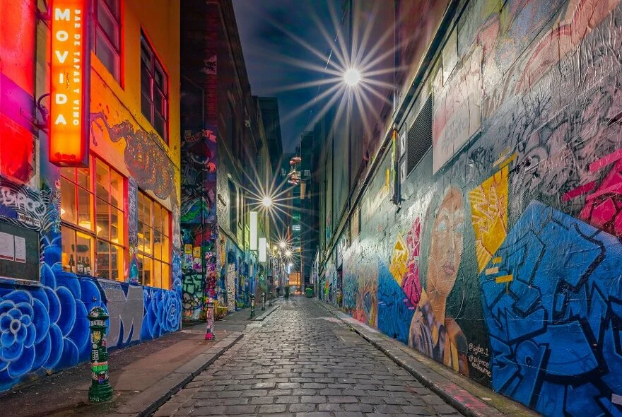
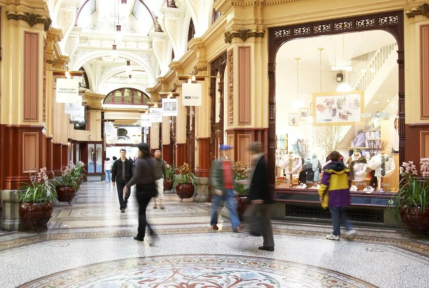
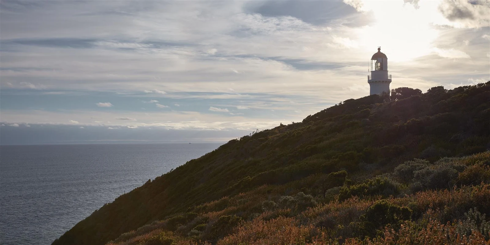

11월 11일
대한항공 KE407 출발 · 프레스티지사진 더 보기수요일
인천 출발
날짜 링크저녁 인천에서 출발해 기내에서 밤을 보내고, 다음 날 아침 브리즈번에 도착하는 일정입니다. 대한항공 KE407의 제안 시각은 19:40이며, 발권 전 해당 날짜의 운항 시각과 좌석을 확인합니다.
- 17:00인천공항 · 체크인과 라운지
- 비행 9시간 40분
- 19:40대한항공 KE407 출발 · 프레스티지
숙박기내

멜버른 2박, 해밀턴 아일랜드 3박, 골드코스트 2박, 브리즈번 2박으로 구성한 제안입니다. 샌드벨트의 Yarra Yarra, 섬의 Dent Island, 골드코스트의 RACV Royal Pines에서 한 라운드씩 치고, 멜버른의 레스토랑과 바, 섬의 요트와 스파, 벌리헤즈 해변의 이틀, 브리즈번의 오마카세와 송별 디너로 이어집니다.
11월 멜버른→해밀턴 직항은 토요일(11월 14일) 버진 오스트레일리아 VA1749 07:25 출발 한 편뿐이라, 멜버른을 이틀로 줄이고 그 자리에 골드코스트 이틀을 넣었습니다. 골드코스트에서는 벌리헤즈 해변 앞 Mondrian에 묵으며 헤드랜드 산책과 벌리의 저녁, Royal Pines 골프와 Pacific Fair 쇼핑을 즐기고, The Star의 카지노와 루프탑 바는 원하실 때만 들르는 선택지로 두었습니다.
11월 멜버른은 봄이라 겉옷이 필요하고, 국내선을 세 번 탑니다. VA1749의 좌석과 세 코스의 티타임부터 확인한 뒤 숙박을 확정합니다.

사진 더 보기저녁 인천에서 출발해 기내에서 밤을 보내고, 다음 날 아침 브리즈번에 도착하는 일정입니다. 대한항공 KE407의 제안 시각은 19:40이며, 발권 전 해당 날짜의 운항 시각과 좌석을 확인합니다.

 Time After Time · 시간 여유가 있을 때
Time After Time · 시간 여유가 있을 때 Gimlet 디너 · 예약 제안
Gimlet 디너 · 예약 제안브리즈번 도착 후 입국 수속과 국내선 환승을 합니다. 별도 발권이라면 3~4시간의 환승 여유를 두는 편으로 검토하며, 국내선 편명·출발 시각은 아직 정하지 않았습니다. 비행은 약 2시간 15분이고, 멜버른 시계는 브리즈번보다 1시간 빠릅니다.
오후 Park Hyatt Melbourne에 도착하면 먼저 짐을 맡기고, 객실이 준비된 뒤 쉽니다. 이른 체크인은 보장되지 않습니다. 컨디션이 좋으면 골목과 아케이드를 30~60분 자유 산책합니다. Time After Time은 15:30 영업 종료 전에 여유가 있을 때만 들르며, 페이스트리는 품절될 수 있습니다.
저녁은 Gimlet(김렛) 19:30 예약을 제안합니다. 도착이 늦어지면 산책과 바 방문을 생략합니다. Caretaker’s Cottage는 현장 입장만 가능하므로 대기가 짧을 때만 들르고, 디너에 늦지 않게 19시까지 나옵니다.


 MECCA · 2인 향수 상담 예약 제안
MECCA · 2인 향수 상담 예약 제안 Cleo 12층 루프탑 · 예약 확인
Cleo 12층 루프탑 · 예약 확인샌드벨트의 전통적인 코스 Yarra Yarra Golf Club에서 18홀을 제안합니다. 07:30 티오프는 예약 전 희망 시각이며, 방문객 슬롯을 확보한 뒤 출발 시각을 정합니다. 06시 호텔 출발·06:45 클럽 도착을 기준으로 체크인과 준비 운동 시간을 둡니다. 이른 조식 또는 도시락도 호텔에 미리 문의합니다.
점심 후 MECCA(메카)의 2인 향수 상담을 제안합니다. Fragrance Discovery for Two는 60분·A$100 기준이며 구매 시 차감 조건, 버크 스트리트 매장의 제공 여부와 예약 가능 시각을 확인해야 합니다. 이후 짧은 골목 산책과 호텔 휴식을 갖습니다.
저녁에는 130 Russell Street의 12층 Cleo에서 한잔, 같은 건물 지상층(Ground Level)의 Marmelo에서 식사를 제안합니다. 다음 날 새벽에 공항으로 출발하므로 18시 Cleo, 19시 Marmelo로 이른 저녁을 잡고 일찍 쉽니다. 두 업장은 예약과 운영 공간이 다르며, 바 방문보다 디너 예약 시각을 우선합니다.

/catseye-beach-landscape.jpg?w=1600&fit=crop) 캐츠아이 비치 산책
캐츠아이 비치 산책 선셋 세일 · 약 90분
선셋 세일 · 약 90분/Stay/Leeward/qualia-resort-Leeward-Pavilion-Whitsunday-views.jpg?w=1600&fit=crop) Leeward Pavilion 체크인
Leeward Pavilion 체크인토요일 아침 버진 오스트레일리아 VA1749(07:25 멜버른 출발 → 09:30 해밀턴 아일랜드 도착)로 섬에 갑니다. 11월 멜버른→해밀턴 직항은 이 요일의 한 편뿐이라 좌석을 먼저 확보해야 하는 항공편입니다. 비행은 약 3시간 5분이고 해밀턴 현지시각은 멜버른보다 1시간 느립니다. 호텔은 05시에 나서 출발 2시간 전 공항에 도착합니다.
섬에 내리면 qualia의 리조트 차량으로 10분. 객실 준비 전이라 짐만 맡기고 캐츠아이 비치를 걸은 뒤 Pebble Beach에서 점심, 14시 체크인 후 프라이빗 데크에서 쉽니다. 17시에는 요트로 나가 휘트선데이의 해 질 녘을 보고(약 90분 상품, 출항 시각 확인), 저녁은 Long Pavilion에서.

/dine/long-pavilion/qualia-resort-long-pavilion-entrance-sea-views.jpg?w=1600&fit=crop)

/spa/spa-qualia/qualia-resort-spa-qualia-day-spa-entry.jpg?w=1600&fit=crop) Spa qualia 커플 트리트먼트
Spa qualia 커플 트리트먼트 coca chu 저녁 · 캐츠아이 비치
coca chu 저녁 · 캐츠아이 비치예약한 티타임에 연결되는 골프 페리를 타고 Dent Island의 해밀턴 아일랜드 골프클럽으로 건너갑니다. 섬 하나가 통째로 18홀이고 모든 홀에서 바다가 보입니다. 페리 출발과 티오프는 서로 다른 시각이며, 아래 오전 시간은 예약 전 목표입니다. 라운드 뒤 클럽하우스에서 점심을 먹고 돌아옵니다.
오후에는 Spa qualia의 커플 트리트먼트(90분)를 받고 데크에서 쉽니다. 저녁은 캐츠아이 비치 앞 coca chu의 동남아시아 요리. 음주 후 이동은 리조트 차량 서비스를 이용합니다.
/whitehaven-beach-aerial-of-shorelines.jpg?width=1600&height=900&fit=crop)
 힐 인렛·화이트헤이븐 · 출항시각 확인
힐 인렛·화이트헤이븐 · 출항시각 확인/Experiences/Heart-Reef/saltywings-qualia-resort-Heart-Reef-Heart-Island-Great-Barrier-Reef.jpg?w=1600&fit=crop) 선택: 하트리프 경비행기 · 상품·날씨 확인페블 비치 디너 · 4코스
선택: 하트리프 경비행기 · 상품·날씨 확인페블 비치 디너 · 4코스힐 인렛 전망대와 화이트헤이븐 비치를 함께 둘러보는 반나절 상품을 우선 예약합니다. 보트로 이동한 뒤 숲길을 걸어 전망대에 올라 모래와 바다가 만드는 무늬를 내려다봅니다. 조수에 따라 오전·오후 출항이 달라지므로, 아래 시간은 오전편을 확보했을 때의 예시입니다.
오전 투어를 마치고 돌아오면 점심과 휴식 시간을 갖습니다. 하트리프 경비행기는 선택 일정으로, 오전 보트와 당일 비행이 모두 가능한 경우에만 예약합니다. 보트가 오후편이거나 날씨가 좋지 않으면 비행을 생략하고 리조트에서 쉽니다. 저녁에는 숙박 패키지에 포함된 Pebble Beach의 4코스 디너를 즐깁니다.
/Dine/Pebble-Beach/qualia-resort-Pebble-Beach-pool-sunlounges.jpg?w=1600&fit=crop)

 선택: Passage Peak 아침 하이킹
선택: Passage Peak 아침 하이킹 Mondrian Gold Coast 체크인
Mondrian Gold Coast 체크인 Rick Shores 디너
Rick Shores 디너원하시면 일출 후 Passage Peak 하이킹(휴식 포함 약 2시간 30분)으로 섬의 마지막 아침을 보냅니다. 체크아웃 후 낮 비행기로 브리즈번에 내리고, 해밀턴→골드코스트 직항이 없으므로 공항에서 차로 1시간 15분 남쪽의 벌리헤즈로 갑니다. 해변 바로 앞 Mondrian에 16시 전후 체크인을 목표로 합니다.
짐을 풀고 호텔 앞에서 시작하는 벌리 헤드 국립공원의 오션뷰 산책로(편도 1.2km, 평탄)를 걷고, 제임스 스트리트의 부티크를 지나 소나무 아래 잔디 언덕 벌리 힐에서 선셋. 첫 저녁은 파도 소리 위의 팬아시안 Rick Shores.


.jpg?auto=format&fit=max&w=1400) Pacific Fair 쇼핑
Pacific Fair 쇼핑 벌리 파빌리온 선셋
벌리 파빌리온 선셋 SHŌTŌ 디너
SHŌTŌ 디너호주 PGA 챔피언십이 열리던 RACV Royal Pines에서 18홀을 제안합니다. 호텔에서 차로 25분, 07:30은 희망 티타임이며 카트 이용이 필수인 리조트 코스입니다. 라운드 뒤 클럽하우스에서 가볍게 점심.
오후는 차로 10분 거리 브로드비치의 Pacific Fair에서 명품 매장을 둘러봅니다. 바로 길 건너 The Star Gold Coast는 원하실 때만 들르는 선택지로, 카지노나 19층 루프탑 바 Nineteen에서 한잔할 수 있습니다. 해 질 무렵 벌리헤즈로 돌아와 벌리 파빌리온에서 한잔, 저녁은 야키토리와 핸드롤의 SHŌTŌ. 원하시면 호텔 CIEL 스파를 오후에 넣을 수도 있습니다.


 커럼빈 생추어리 · 코알라 체험
커럼빈 생추어리 · 코알라 체험 Lan 배스하우스 · 90분
Lan 배스하우스 · 90분 Sky Deck · Cicada Blu 선셋
Sky Deck · Cicada Blu 선셋마지막 골드코스트 아침은 동네에서 가장 사랑받는 Paddock Bakery에서 조식을 하고, 차로 10분 거리 커럼빈 생추어리에서 코알라를 안아 보는 체험을 한 뒤 브리즈번으로 올라갑니다(차로 1시간 20분). 강 건너 사우스뱅크의 GOMA에서 호주와 아시아·태평양의 현대미술을 보고(일반 입장 무료, 특별전 별도), 바로 옆 피시 레인의 Goodside에서 늦은 점심. 15시 제임스 스트리트의 The Calile에 체크인합니다.
16시 걸어서 10분 거리 Lan 배스하우스에서 90분. 해 질 무렵에는 퀸즈 워프의 Sky Deck(지상 100m, 무료 입장)에 올라 Cicada Blu에서 강과 도시를 내려다보며 한잔. 저녁은 웨스트엔드의 열두 석 오마카세 +81 Sushi Kappo로, 아래는 20시 30분 세션을 예약했을 때의 예시입니다. 17시 30분만 가능하면 배스하우스를 줄이고 Sky Deck을 식사 뒤로 옮깁니다.


 Fountainhead Wine House · 선택 방문
Fountainhead Wine House · 선택 방문 Exhibition 송별 저녁 · 예약 제안호텔 풀 데크 휴식
Exhibition 송별 저녁 · 예약 제안호텔 풀 데크 휴식마지막 아침은 느긋하게 시작합니다. 호텔에서 하워드 스미스 워브스로 이동한 뒤 강변을 산책하고, Crystalbrook Vincent의 Mews에서 아침 식사를 제안합니다. 08:30은 희망 방문 시각이며, 예약 가능 여부를 확인합니다. 강변 산책은 하워드 스미스 워브스에 도착한 뒤 즐깁니다.
호텔 풀 데크에서 쉬다가, 원하면 오후 14:30경 뉴스테드의 Fountainhead Wine House에 들릅니다. 잔으로 판매하는 와인과 간단한 음식을 그날 메뉴에서 골라 즐기는 선택 일정입니다. 별도로 예약한 시음 프로그램은 아니며, 피곤하면 생략하고 호텔에서 쉽니다.
저녁은 Exhibition에서 제철 재료로 구성한 코스 요리를 제안합니다. 19시는 희망 예약 시각으로, 좌석과 금요일 예약 조건·최종 금액을 확인해야 합니다. 다음 날 공항 이동에 맞춰 짐 정리를 마치고 쉬어 갑니다.
 The Calile 출발대한항공 KE408 출발 · 프레스티지
The Calile 출발대한항공 KE408 출발 · 프레스티지오전 5시 10분에 호텔을 출발해 5시 40분까지 브리즈번 국제선 터미널 도착을 목표로 합니다. 국제선 출발 3시간 전 도착 기준이며, 차량 픽업 시각은 당일 경로에 맞춰 확정합니다. 8시 40분 KE408편으로 출발해 같은 날 저녁 6시 5분 인천에 도착합니다.
사진 더 보기피츠로이 가든 옆의 차분한 분위기를 즐길 수 있는 5성급 호텔입니다. 도심 명소까지 걸어갈 수 있고, 골프 일정에는 차량을 이용합니다. 공항에서 차량 약 30~60분을 예상하며, 수하물 수취와 픽업 대기는 별도입니다. 객실은 준비된 뒤 이용할 수 있고, 이른 체크인이 필요하면 보장 가능 여부와 추가 비용을 확인합니다.
사진 더 보기섬 북쪽의 만 16세 이상 리조트. Leeward Pavilion의 프라이빗 데크에서 산호해를 바라봅니다. 3박 골프 패키지는 두 분 각 18홀 1회·조식·디너 1회 포함 조건입니다. 버기는 운전면허와 연령 조건이 있으며, 24시간 리조트 차량 서비스도 이용할 수 있습니다.
사진 더 보기2025년에 문을 연 벌리헤즈의 해변 호텔. 벌리 헤드 산책로와 제임스 스트리트, Rick Shores가 걸어서 닿고, Royal Pines 골프장과 Pacific Fair는 차로 10~25분입니다. 일반 체크인은 15시이며 이른 입실은 보장되지 않습니다. 요금은 지정일 예약 화면에서 확인합니다.
사진 더 보기사진 더 보기사진 더 보기사진 더 보기사진 더 보기사진 더 보기사진 더 보기사진 더 보기사진 더 보기사진 더 보기사진 더 보기사진 더 보기사진 더 보기사진 더 보기사진 더 보기사진 더 보기사진 더 보기사진 더 보기사진 더 보기사진 더 보기사진 더 보기사진 더 보기| 국제선 항공 — 대한항공 프레스티지 왕복 | A$9,510 | ₩970만 |
| 2인 왕복 예산 · 실제 운임·발권 시각·운항편·변경 조건 확인 필요 | ||
| 국내선 항공 3구간 | A$2,700 | ₩275만 |
| 브리즈번→멜버른 비즈니스 희망 · 멜버른→해밀턴 VA1749 · 해밀턴→브리즈번 · 2인 · 좌석·운임 확인 | ||
| 숙박 9박 | A$10,428 | ₩1,064만 |
| Park Hyatt A$650×2 + qualia A$6,188 + Mondrian A$700×2 + The Calile A$770×2 = A$10,428 · 모두 예상 요금 | ||
| 골프 — Yarra Yarra · Royal Pines | A$1,100 | ₩112만 |
| Dent Island 골프는 qualia 패키지 포함 조건 확인 · 카트·클럽 대여 별도 | ||
| 액티비티·체험 | A$3,300 | ₩337만 |
| MECCA 상담 · 선셋 세일 · 커플 스파 · 힐 인렛 · 선택 경비행기 · 코알라 체험 · 배스하우스 · 쇼핑과 카지노는 별도 | ||
| 식사 | A$4,900 | ₩500만 |
| 점심·저녁·음료 예산 · 오마카세 2인 A$900 포함 · 패키지 포함 식사와 선택 메뉴에 따라 재산정 | ||
| 현지 이동 — 기사 포함 차량·공항 이동 예산 | A$3,200 | ₩326만 |
| 브리즈번 공항↔골드코스트, 골드코스트→브리즈번 이동 포함 · 기사 포함 여부·시간 한도·골프백 적재 확인 | ||
| 비자·여행자보험·예비비 | A$1,190 | ₩121만 |
| 합계 · 두 분 | A$36,328 | 약 3,705만 원 |
2026년 10월 19일 검토한 여행 제안입니다. 예약 완료를 확인하는 자료가 없으므로 항공편, 객실, 티타임, 레스토랑과 투어는 모두 예약 전 확인이 필요합니다. 적힌 시각은 예약된 일정표가 아니라 동선을 검토하기 위한 제안 시각입니다.
모든 시각은 해당 지역의 현지 시각입니다. 11월에는 시드니·멜버른이 한국보다 2시간, 퀸즐랜드가 1시간 빠릅니다. 주를 이동할 때는 현지 출발·도착 시각과 실제 비행시간을 구분해 주세요. 차량 이동시간은 교통 상황에 따른 예상치이며 수하물 수취·픽업 대기·주차 시간은 별도입니다.
샌드벨트·섬·골드코스트 리조트 코스의 세 라운드, 멜버른의 식탁과 바, 섬의 요트와 스파, 벌리헤즈 해변의 이틀, 브리즈번의 오마카세와 송별 디너를 담은 안입니다. 국내선 이동이 세 번이고 멜버른의 봄 날씨에 맞는 준비가 필요합니다. 11월 14일 토요일 VA1749 좌석부터 확인한 뒤 숙박과 티타임을 확정합니다.

사진 더 보기